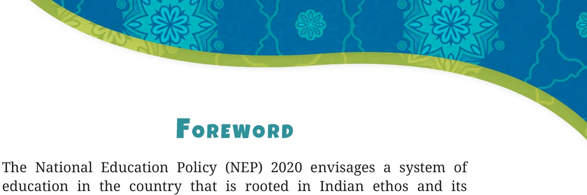
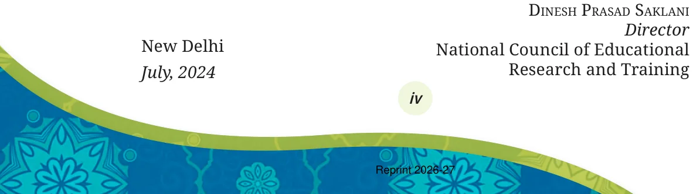
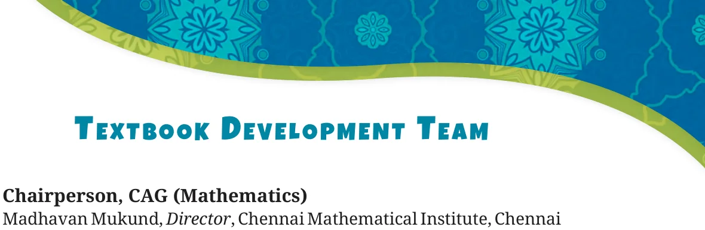
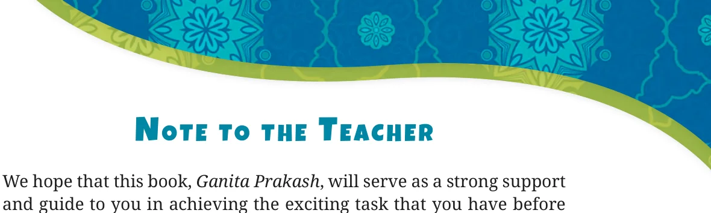

<!DOCTYPE html>
<html lang="en">
<head>
<meta charset="UTF-8">
<meta name="viewport" content="width=device-width,initial-scale=1">
<title>Front Matter — Appendix</title>
<meta name="description" content="Class 6 Mathematics · Appendix · Front Matter">
<link rel="icon" href="data:image/svg+xml,<svg xmlns='http://www.w3.org/2000/svg' viewBox='0 0 100 100'><text y='.9em' font-size='90'>📘</text></svg>">
<link rel="stylesheet" href="../../../assets/book.css">
<link rel="stylesheet" href="https://cdn.jsdelivr.net/npm/katex@0.16.11/dist/katex.min.css" crossorigin="anonymous">
</head>
<body>
<header class="topbar">
<div class="topbar-in">
  <div class="crumb">
    <span class="c1"><a href="../../../index.html">Library</a> · <a href="../../index.html">Class 6 Mathematics</a></span>
    <span class="c2">Appendix · Front Matter</span>
  </div>
  <a class="tb-btn" data-nav="prev" href="../../10-the-other-side-of-zero/39-solutions/index.html" title="CHAPTER 10 — SOLUTIONS">←</a>
  <details class="drawer"><summary class="tb-btn" title="Sections in this chapter">☰</summary>
<div class="drawer-panel"><div class="dh">Appendix</div><a href="../00-front-matter/index.html" aria-current="page">Front Matter</a></div></details>
  <span class="tb-btn" aria-disabled="true">→</span>
  <button class="tb-btn" data-theme-toggle title="Toggle light / dark" aria-label="Toggle light or dark theme">◐</button>
</div>
<div class="progress"><span style="width:100.0%"></span></div>
</header>
<main class="wrap">
<div class="sec-head">
  <p class="eyebrow"><a href="../index.html">Appendix · Appendix</a></p>
  <h1>Front Matter</h1>
  <p class="sec-meta">18 figures</p>
</div>
<article class="prose">
<figure class="fig wide"></figure>
<h2 id="s-textbook-of-mathematics-for-grade-6">Textbook of Mathematics for Grade 6</h2>
<figure class="fig"></figure>
<figure class="fig"></figure>
<p>\(0674 -\) Textbook of Mathematics for Grade 6Ganita Prakash ISBN 978-93-5292-717-3</p>
<p>First Edition ALL RIGHTS RESERVED</p>
<p>August 2024 Shravna 1946  No part of this publication may be reproduced, stored in a retrieval system or transmitted, in any form or by any means, electronic, mechanical, photocopying, recording or otherwise without the prior permission of the publisher.</p>
<p class="lead">Reprinted</p>
<p> This book is sold subject to the condition that it shall not, by December 2024 Pausha 1946 way of trade, be lent, re-sold, hired out or otherwise disposed January 2026 Pausha 1947 of without the publisher’s consent, in any form of binding or cover other than that in which it is published.  The correct price of this publication is the price printed on this page, Any revised price indicated by a rubber stamp or by a sticker or by any other means is incorrect and should PD 480T BS be unacceptable.</p>
<aside class="sidenote"><p>OFFICES OF THE PUBLICATION Division, NCERT</p></aside>
<p>© National Council of Educational NCERT Campus Research and Training, 2024 Sri Aurobindo Marg</p>
<aside class="sidenote"><p>New Delhi 110 016 Phone : 011-26562708</p><p>108, 100 Feet Road Hosdakere Halli Extension Banashankari III Stage</p><p>Bengaluru 560 085 Phone : 080-26725740</p><p>Navjivan Trust Building P.O. Navjivan</p><p>Ahmedabad 380 014 Phone : 079-27541446</p><p>CWC Campus Opp. Dhankal Bus Stop Panihati</p><p>Kolkata 700 114 Phone : 033-25530454</p><p>CWC Complex Maligaon</p><p>Guwahati 781 021 Phone : 0361-2674869</p><p>Publication Team</p></aside>
<p>Head, Publication : M.V. Srinivasan 65.00 Division</p>
<p>Chief Editor : Bijnan Sutar Chief Business Manager : Amitabh Kumar Chief Production Officer : Deepak Jaiswal (In charge) Printed on 80 GSM paper with NCERT watermark Assistant Production : Sayuraj A.R. Officer Published at the Publication Division by the Secretary, National Council of Cover and Layout Educational Research and Training, Creative Art Studio Sri Aurobindo Marg, New Delhi 110016 Illustrations and printed at B.R. Printers C-46/2, Chetan Sharma, Animagic India Lawrence Road, Industrial Area, Alankrita Amaya New Delhi-110035 Shri Chitra Creative</p>
<figure class="fig wide"></figure>
<p>civilisational accomplishments in all domains of human endeavour and knowledge, while at the same time preparing the students to constructively engage with the prospects and challenges of the twenty-first century. The basis for this aspirational vision has been well laid out by the National Curriculum Framework for School Education (NCFSE) 2023 across curricular areas at all stages. Nurturing the students’ inherent abilities touching upon all the five planes of human existence, the pañchakośhas, in the Foundational and the Preparatory Stages has paved the way for the progression of their learning further at the Middle Stage. The Middle Stage acts as a bridge between the Preparatory and the Secondary Stages, spanning three years from Grade 6 to 8. This framework, at the Middle Stage, aims to equip students with the skills that are needed to grow as they advance in their lives. It endeavours to enhance their analytical, descriptive, and narrative capabilities, and to prepare them for the challenges and opportunities that await them. A diverse curriculum, covering nine subjects ranging from three languages - including at least two languages native to India - to Science, Mathematics, Social Sciences, Art Education, Physical Education and Well-being, and Vocational Education promotes their holistic development. Such a transformative learning culture requires certain essential conditions. One of them is to have appropriate textbooks in different curricular areas, as these textbooks will play a central role in mediating between content and pedagogy \(- a\) role that will strike a judicious balance between direct instruction and opportunities for exploration and inquiry. Among other conditions, classroom arrangement and teacher preparation are crucial to establish conceptual connections both within and across curricular areas. The National Council of Educational Research and Training (NCERT), in its part, is committed to provide students with such high- quality textbooks. Various Curricular Area Groups, which have been constituted for this purpose, comprising notable subject-experts,</p>
<p>pedagogues, and practising teachers as their members, have made all possible efforts to develop such textbooks. Ganita Prakash, the textbook of Mathematics for Grade 6, is one of these. The textbook is a captivating journey through the world of mathematics designed for Grade 6 students. The book begins with encouraging the students to observe and explore the patterns around them and discover mathematical concepts on their own. The book further delves into the realm of numbers, where young learners are introduced to the magic of numbers and shapes. Through colourful illustrations and interactive exercises, children develop a strong foundation in arithmetic, paving the way for more complex mathematical concepts. Throughout the book, stories, conversations and anecdotes have been incorporated to make abstract mathematical concepts more relatable and accessible to young learners. Content has been evolved using puzzles and innovative problems that will not only engage the students in thoughtfully relating the mathematical concepts to the world around them and help them in deepening their understanding of mathematics, but also prepare them to understand the concepts of the emerging field of Computational Thinking. Indian rootedness and relation to Indian Knowledge Systems (IKS) has been embedded in the content of the textbook. However, in addition to this textbook, students at this stage should also be encouraged to explore various other learning resources. School libraries play a crucial role in making such resources available. Besides, the role of parents and teachers will also be invaluable in guiding and encouraging students to do so. With this, I express my gratitude to all those who have been involved in the development of this textbook and hope that it will meet the expectations of all stakeholders. At the same time, I also invite suggestions and feedback from all its users for further improvement in the coming years.</p>
<figure class="fig wide"></figure>
<p>About the Book</p>
<p>Mathematics helps students develop not only basic arithmetic skills, but also the crucial capacities of logical reasoning, creative problem solving, and clear and precise communication (both oral and written). Mathematical knowledge also plays a crucial role in understanding concepts in other school subjects, such as Science and Social Science, and even Art, Physical Education, and Vocational Education. Learning Mathematics can also contribute to the development of capacities for making informed choices and decisions. Understanding numbers and quantitative arguments is necessary for effective and meaningful democratic and economic participation. Mathematics thus has an important role to play in achieving the overall Aims of School Education. Mathematics at the Middle Stage is a major challenge and has to perform the dual role of being both close to the experience and environment of the child and being abstract. It must perform the dual role of developing intuition while also maintaining and emphasising rigour. It must perform the dual role of enhancing critical and logical thinking while also developing artistry and creativity and a sense of elegance and aesthetics. Finally, Mathematics must perform the dual role of providing students plenty of opportunities for exploration and discovery of concepts on their own while also teaching best-known methods in the global repertoire of mathematics. The present textbook has made an attempt to address the above- mentioned goals and challenges of learning mathematics. The writers of this book have aimed to strike a judicious balance between informal and formal definitions and methods to develop in students both intuition and rigour. The book also provides numerous opportunities for student - student and student - teacher interaction in the classroom to promote active and experiential learning. A number of questions, puzzles, and interactive exercises are posed throughout the book to encourage constant exploration. Many of the questions are open- ended to stimulate in-class discussion. Finally, some famous unsolved problems have also been included so that students can appreciate that Mathematics is still a very active subject, with much that is already known and discovered, but also many exciting frontiers that remain unknown and unseen. Such unknown realms and unresolved questions will require new ideas and a new generation of adventurers to explore and understand, and to thereby solve these exciting problems.</p>
<p>Among the world’s greatest problem solvers and most creative minds of the current generation is world-renowned mathematician Manjul Bhargava. He has resolved decades-old, and in some cases centuries- old, problems of a fundamental nature across Mathematics, particularly in the areas of number theory, algebra, representation theory, and arithmetic geometry. For his pioneering breakthroughs in Mathematics, in 2014 he became the first person of Indian origin to receive the Fields Medal, the highest honour given to mathematicians, awarded every four years and known as the ʻNobel Prize of Mathematics’. We are thrilled and honoured that the beautiful Chapter 1 of this book, ʻPatterns in Mathematics’, has been kindly composed and contributed by Professor Bhargava. In this chapter, in the section ʻWhat is Mathematics?’, Bhargava eloquently speaks of mathematics as a creative art - as a search for beautiful patterns, and the explanations of those patterns. In later sections of the chapter, he describes a sampling of some of the most basic patterns in mathematics - sequences of numbers and sequences of shapes - and their remarkable and often- surprising interrelations. These patterns are regularly revisited in later chapters of this book, to emphasise the unity of mathematics, and will also be revisited in future years. We hope that this exploratory chapter will help in inspiring a new generation to explore and pursue mathematics. Building on the idea of exploring patterns in mathematics, the book then turns to a journey across different areas of mathematics. Chapter 2, ‘Lines and Angles’, introduces the building blocks of geometry - points, line segments, rays, lines, angles, and how to measure angles. Chapter 3, ‘Number Play’, is an exploratory adventure through some instructive but fun games and puzzles in mathematics - some of which are still unsolved! Chapter 4, ‘Data Handling’, is an introduction to the art of collecting and presenting data, including both its analytic and aesthetic aspects. Chapter 5, ‘Prime Time’, is a playful adventure through prime numbers - the building blocks of the universe of whole numbers - and factorization. Chapter 6, ‘Perimeter and Area’, is a revision of these fundamental notions, with a variety of challenging puzzles to keep children on their toes and enhance understanding. Chapter 7, ‘Fractions’, will be many students’ first encounter with this important concept; the chapter aims to build intuition about fractions gradually, starting with fractional units like 1/10 as the foundation, and gradually building up to working with general fractions, including</p>
<p>their comparison, addition, and subtraction. Chapter 8, ‘Playing with Constructions’, is a hands-on experience of drawing shapes, including using a compass and a ruler, to enhance students’ geometric intuition and comprehension. Chapter 9, ‘Symmetry’, is an artistic and hands- on exploration of this most important and ubiquitous concept in Mathematics and beyond. Finally, Chapter 10, ‘The Other Side of Zero’, aims for students to gain intuition for negative numbers by visiting Bela’s Building of Fun, and gradually working up to understanding the laws of addition and subtraction of all integers as laid down by Brahmagupta. In all chapters, an attempt has been made to emphasise connections with other subjects including Art, History, and Science. Many pictures and drawings have been included to illustrate patterns, numbers, constructions, symmetry, games, puzzles, etc., to thereby develop visual and artistic imagination, intuition for mathematical objects and principles. The history of various mathematical concepts has been described, including Brahmagupta’s world-changing discoveries in the year 628 C.E. of the laws for addition and subtraction of fractions and of zero and negative numbers. Other discoveries from around the world, of unit fractions, searching for primes, Collatz Conjecture, Kaprekar numbers, etc., have also been described with their history to help students appreciate and humanize the joy and process of discovery. Examples from Science (the use of negative numbers to measure temperature or heights above or below sea level) also abound to illustrate the importance of the use of mathematical concepts in Science. By weaving together storytelling and hands-on activities, we hope that an immersive learning experience will be created that ignites curiosity and fosters a love for mathematics. It is hoped that teachers would give children the opportunity to discuss, play, engage with each other, provide logical arguments for different ideas, and find loopholes in arguments presented. This is necessary for the learners to eventually develop the ability to understand what it means to prove something and also become confident about underlying concepts. The mathematics classroom should not expect a blind application of algorithms but should rather encourage children to find many different ways to solve problems. As per the NEP 2020, Computational Thinking has also been gently introduced through puzzles, games, and interactive exercises that encourage such thinking. Indian rootedness has also been kept in</p>
<p>mind while giving contexts for different concepts. The contributions of Indian mathematicians have been given as part of a problem- solving approach to make students aware of India’s rich mathematical heritage and its global contributions to mathematics. The concepts and problems are related to daily life situations. An attempt has been made to use contexts and materials with which the students are familiar. Learning material sheets have been given at the back of the book that may be photocopied and used. At many places, exercises or activities are given to encourage peer group efforts and discussions. The textbook intends to address the learning needs of a diverse group of students in the classroom. We have tried to link concepts learnt in initial chapters with ideas in subsequent chapters to show the connectedness and unity of mathematics. We hope that teachers will use this as an opportunity to revise these concepts in a spiralling way so that children are able to appreciate the entire conceptual structure of mathematics. We hope that teachers may give more time to the ideas of fractions, negative numbers and other notions that are new to students. Many of these are the basis for further learning in mathematics. Finally, this book aims to be more than just a textbook - it’s a passport to a world of mathematical discovery and exploration. Whether used in the classroom or at home, we hope that it may inspire students to embark on their own mathematical adventures, empowering them to see the beauty and relevance of mathematics in everything around them. With its engaging approach and comprehensive coverage of Grade 6 mathematics concepts, this book hopes and aims to captivate young minds and set them on a lifelong journey of mathematical discovery. I thank again all the writers of and contributors to this textbook for this important and valuable contribution and service to the nation’s mathematics teachers, learners and enthusiasts. We look forward to your comments and suggestions regarding the book and hope that you will send interesting exercises, activities and tasks that you develop during the course of teaching and learning, to be included in future editions.</p>
<aside class="sidenote"><p>Ashutosh Wazalwar</p><p>Professor, Academic Convener</p></aside>
<figure class="fig wide"></figure>
<figure class="fig wide"></figure>
<ul class="qlist">
<li><span class="mk">1.</span><span class="lt">M.C. Pant, Chancellor, National Institute of Educational</span></li>
</ul>
<p>Planning and Administration (NIEPA), (Chairperson)</p>
<ul class="qlist">
<li><span class="mk">2.</span><span class="lt">Manjul Bhargava, Professor, Princeton University</span></li>
</ul>
<p>(Co-Chairperson )</p>
<ul class="qlist">
<li><span class="mk">3.</span><span class="lt">Sudha Murty, Acclaimed Writer and Educationist</span></li>
<li><span class="mk">4.</span><span class="lt">Bibek Debroy, Chairperson, Economic Advisory Council - Prime</span></li>
</ul>
<p>Minister (EAC - PM)</p>
<ul class="qlist">
<li><span class="mk">5.</span><span class="lt">Shekhar Mande, Director General (Former), CSIR, Distinguished</span></li>
</ul>
<p>Professor, Savitribai Phule Pune University, Pune</p>
<ul class="qlist">
<li><span class="mk">6.</span><span class="lt">Sujatha Ramdorai, Professor, University of British Columbia,</span></li>
</ul>
<p>Canada</p>
<ul class="qlist">
<li><span class="mk">7.</span><span class="lt">Shankar Mahadevan, Music Maestro, Mumbai</span></li>
<li><span class="mk">8.</span><span class="lt">U. Vimal Kumar, Director, Prakash Padukone Badminton</span></li>
</ul>
<p>Academy, Bengaluru</p>
<ul class="qlist">
<li><span class="mk">9.</span><span class="lt">Michel Danino, Visiting Professor, \(IIT -\) Gandhinagar</span></li>
<li><span class="mk">10.</span><span class="lt">Surina Rajan, IAS (Retd.), Haryana, Former Director General,</span></li>
</ul>
<ul class="qlist">
<li><span class="mk">11.</span><span class="lt">Chamu Krishna Shastri, Chairperson, Bhasha Samiti, Ministry of</span></li>
</ul>
<p>Education</p>
<ul class="qlist">
<li><span class="mk">12.</span><span class="lt">Sanjeev Sanyal, Member, Economic Advisory Council - Prime</span></li>
</ul>
<p>Minister (EAC - PM)</p>
<ul class="qlist">
<li><span class="mk">13.</span><span class="lt">M.D. Srinivas, Chairperson, Centre for Policy Studies, Chennai</span></li>
<li><span class="mk">14.</span><span class="lt">Gajanan Londhe, Head, Programme Office, NSTC</span></li>
<li><span class="mk">15.</span><span class="lt">Rabin Chhetri, Director, SCERT, Sikkim</span></li>
<li><span class="mk">16.</span><span class="lt">Pratyusha Kumar Mandal, Professor, Department of Education in</span></li>
</ul>
<p>Social Science, NCERT, New Delhi</p>
<ul class="qlist">
<li><span class="mk">17.</span><span class="lt">Dinesh Kumar, Professor and Head, Planning and Monitoring</span></li>
</ul>
<p>Division, NCERT, New Delhi</p>
<ul class="qlist">
<li><span class="mk">18.</span><span class="lt">Kirti Kapur, Professor, Department of Education in Languages,</span></li>
</ul>
<p>NCERT, New Delhi</p>
<ul class="qlist">
<li><span class="mk">19.</span><span class="lt">Ranjana Arora, Professor and Head, Department of Curriculum</span></li>
</ul>
<p>Studies and Development, NCERT (Member-Secretary )</p>
<figure class="fig wide"></figure>
<figure class="fig wide"></figure>
<h3 id="s-contributors">Contributors</h3>
<p>Aaloka Kanhere, Project Scientific Officer, Homi Bhabha Center for Science Education, Mumbai</p>
<p>Amartya Kumar Dutta, Professor, Stat-Math Unit, Indian Statistical Institute (ISI), Kolkata</p>
<p>Amritanshu Prasad, Professor, The Institute of Mathematical Sciences, Chennai</p>
<p>Anjali Gupte, Principal (Retd.), Vidya Bhavan Public school, Udaipur H. S. Sharada, TGT, Government High School, HD Kote, Karnataka K. (Ravi) Subramaniam, Professor (Retd.), Homi Bhabha Centre for Science Education (HBCSE), Mumbai</p>
<p>K. V. Subrahmanyam, Professor, Chennai Mathematical Institute (CMI), Chennai</p>
<p>Madhu B., Assistant Professor, Regional Institute of Education (RIE), Mysuru</p>
<p>Manjul Bhargava, Professor, Princeton University, and Co-Chairperson, NSTC</p>
<p>Padmapriya Shirali, Former Principal, Sahyadri School KFI, Pune Patanjali Sharma, Assistant Professor, Regional Institute of Education (RIE), Ajmer</p>
<p>Rakhi Bannerjee, Associate Professor, Azim Premji University, Bengaluru</p>
<p>Shailesh A. Shirali, Director, Teacher Education Program Valley School, KFI</p>
<p>Shivkumar K. M, Consultant, Programme Office, NSTC Shravan S. K., Consultant, Programme Office, NSTC</p>
<p>Sujatha Ramdorai, Professor, University of British Columbia, Canada, Member NSTC</p>
<p>S. Viswanath, Professor, Institute of Mathematical Sciences (IMSc), Chennai</p>
<h3 id="s-reviewers">Reviewers</h3>
<p>Anurag Behar, Member, National Curriculum Framework Oversight Committee</p>
<p>R. Ramanujam, Professor (Retd.), Institute of Mathematical Sciences (IMSc), Chennai</p>
<h3 id="s-member-coordinator-cag-mathematics">Member-Coordinator, CAG (Mathematics)</h3>
<p>Ashutosh Kedarnath Wazalwar, Professor, Department of Education in Science and Mathematics, NCERT, New Delhi</p>
<figure class="fig wide"></figure>
<figure class="fig wide"></figure>
<p>and members of the Curricular Area Group (CAG): Mathematics and other concerned CAGs for their guidelines on cross-cutting themes in developing this textbook. During the development of this textbook, various workshops were organised and subject experts in Mathematics from different Institutions were invited. The NCERT acknowledges the valuable views and inputs given by subject experts - Shri V. Sivashankara Sastry, Math Communicator, Kolar; P. Satyanarayana Sarma, Guest Faculty, Department of Mathematics, K. B. N. College (Autonomous), Vijaywada, Andhra Pradesh; Suhas Saha, Head, Mathematics Department, ISHA Home School, Coimbatore; Priyavrat Deshpande, Associate Professor, CMI, Chennai; SadikAli Shaikh, Head, Department of Mathematics, Maulana Azad College of Arts, Science and Commerce, Aurangabad, Maharashtra; Jaspal Kaur, TGT (Maths), School of Excellence, Delhi; Bina Prakash, Sr. PGT (Maths), Campion School, Bhopal; Mahendra Shankar, Senior Lecturer (Retd.), NCERT, New Delhi; Ram Avatar, Professor (Retd.), NCERT, New Delhi; KASSV Kameshwar Rao, Associate Professor (Retd.), NCERT; Aditya Chandrashekhar Karnataki, Assistant Professor, Chennai Mathematical Institute, Chennai; Nagesh Mone, Principal (Retd.), Deccan Education Society’s Dravid High School, Wai, Maharashtra; R. Athmaraman, Mathematics Education Consultant, TI Matric Higher Secondary School and AMTI, Chennai, Tamil Nadu; Upendra Kulkarni, Associate Professor, Chennai Mathematical Institute, Chennai; Anupama S.M., Faculty, Azim Premji University; Sandeep Diwakar, Subject Expert-Mathematics, Azim Premji Foundation; Ashish Gupta, Resource Person, Azim Premji Foundation; Praveen Uniyal, Resource Person, Azim Premji Foundation; Ramchandar Krishnamurthy, Principal, Azim Premji School - for improving the content and pedagogy of the textbook. The Council acknowledges the academic and administrative support of Sunita Farkya, Professor and Head, DESM, NCERT, New Delhi.</p>
<p>The Council appreciates the contributions of Sushmita Joshi, Senior Research Associate; Manju Mhar, Senior Research Associate; Shakti Kumar Bhardwaj, Mathematics Lab Assistant, Department of Education in Science and Mathematics, NCERT, for providing support in the development of the textbook. The contributions of Ilma Nasir, Editor (contractual); Asma Khanam, Assistant Editor (contractual); Aastha Sharma, Editorial Assistant (contractual); Ariba Usman, Adiba Tasneem, Ritika Marothia, Mobbata Ram and Kaiminlen Doungel, Proof Readers (contractual), Publication Division are also appreciated. The NCERT gratefully acknowledges the contributions of Pawan Kumar Barriar, In charge, DTP Cell; Mohan Singh, Vipan Kumar Sharma, Kishore Singhal, Ajay Kumar Prajapati and Upasana, DTP Operators (contractual), Publication Division, NCERT for all their efforts in laying out this book.</p>
<figure class="fig wide"></figure>
<figure class="fig wide"></figure>
<p>you: that of passing on the joy of learning the beautiful subject of mathematics to the next generation. This task calls for providing a fertile environment that allows for the flowering of mathematical thinking in the minds of students. Classrooms, where students just listen and write down whatever is being told to them or written on the board, are deficient in the conditions required for learning mathematics. Instead, classrooms need to be places where students are engaged in playing with mathematical concepts, finding and discussing patterns, and developing creative strategies together to solve problems. Students should also be posing problems to each other and discussing possible solutions with each other. In fact, these are the very conditions that have led to the development of the entire field of mathematics so far, and so one cannot expect students to pick up mathematical thinking and understanding without these conditions. Fortunately, it is not difficult to create such conditions in the classroom. It just requires an interesting question, problem, pattern, or challenge to be thrown open to the students on a regular basis, and sufficient time to be given to them to play with, discuss, and work on it as a class or in pairs or groups. Along with it, an environment that accepts mistakes and acknowledges their importance in learning needs to be nurtured. While creating the spark for initiating mathematical thinking in classrooms is not difficult, sustaining it may be challenging and may involve efforts from your side. Nevertheless, even if just the first part of throwing open a question, problem, pattern, or challenge is done at least once or twice a week, accompanied by sufficient waiting time from your side for students to play, discuss, and work on it, it can have a great positive impact on how the students view and approach mathematics. It should be noted that this positive impact will not happen overnight. That takes time and depends on various factors such as the number of opportunities you give for problem solving, your patience, and the encouragement you give to the students.</p>
<p>To support you in posing problems, all the problems or questions in this book are marked using the icon . This icon is an indicator of a potential opportunity to start off a process of problem solving and exploration in the classroom. You will find some of the problems labelled ‘Math Talk’. Such questions can especially be made as topics for classroom discussion. To develop students’ mathematical thinking and understanding of concepts, a sufficient number of problems are given. Trying to ‘cover’ all of them must not happen at the cost of students not getting to spend quality time on playing with and discussing them. It is important to understand that the exploratory problems are not only for promoting problem solving skills; they also serve in strengthening procedural fluency when children start engaging in exploration. Efforts must be made in making students independent learners. One essential aspect required for this is an ability to read and understand mathematical text. To promote this skill, students should be encouraged to read the book by themselves and in groups. Give opportunities to them to interpret what they read and express it to others. This will also address the big problem that students face in speaking mathematics and interpreting word problems. This book contains a number of open-ended problems. It also contains new treatments of certain concepts. If you are not able to solve them or follow some of them immediately, it is perfectly okay! Not everyone knows everything. Along with trying to understand and reflect upon such content, it will be very useful to take it to the classroom and open it up for discussion. After the discussion, things that are clear and those that are not yet clear can be clearly summarised. This process itself can throw a lot of light on the content. In these discussions, you can participate as a fellow seeker, and when students see a teacher seek and think to understand something, it sets a wonderful example for them. It is hoped that you and your students will have a great and fruitful time using this book!</p>
<h2 id="s-summary-of-key-points">Summary of Key points</h2>
<p>Time for Exploration</p>
<ul class="qlist">
<li><span class="mk">1.</span><span class="lt">It is important to routinely pose new problems, questions, patterns,</span></li>
</ul>
<p>or challenges to the students and give them sufficient time to play with, discuss, and work on them, individually and in groups.</p>
<ul class="qlist">
<li><span class="mk">2.</span><span class="lt">During this time, an environment that accepts mistakes and</span></li>
</ul>
<p>acknowledges their importance in learning needs to be nurtured.</p>
<ul class="qlist">
<li><span class="mk">3.</span><span class="lt">There should be a culture where students pose problems to each</span></li>
</ul>
<p>other and discuss with each other various ways to approach the problems.</p>
<p>About the Problems in the Book</p>
<ul class="qlist">
<li><span class="mk">1.</span><span class="lt">The exploratory problems in the book not only promote problem</span></li>
</ul>
<p>solving; they also aim to strengthen procedural fluency when children start engaging in exploration.</p>
<ul class="qlist">
<li><span class="mk">2.</span><span class="lt">Trying to ‘cover’ all the problems in the book must not happen at</span></li>
</ul>
<p>the cost of students not getting to spend quality time on playing with, discussing, and solving them.</p>
<p>Reading</p>
<ul class="qlist">
<li><span class="mk">1.</span><span class="lt">Encourage students to read the book by themselves and in groups.</span></li>
<li><span class="mk">2.</span><span class="lt">Give opportunities to them to interpret what they read and to</span></li>
</ul>
<p>express it to others.</p>
<p>Right of Not Knowing!</p>
<ul class="qlist">
<li><span class="mk">1.</span><span class="lt">It is perfectly okay if some of the content is not understood</span></li>
</ul>
<p>immediately. Along with trying to understand and reflect upon such content, it can also be taken to the classroom and opened up for discussion. After the discussion, things that are clear and those that are not yet clear can be clearly summarised. In these discussions, you can participate as a fellow seeker, and when students see a teacher seek and think to understand something, it sets a wonderful example for them!</p>
<ul class="qlist">
<li><span class="mk">2.</span><span class="lt">Learning is a continual process. Indeed, there is so much</span></li>
</ul>
<p>in mathematics that is still not known and requires further exploration!</p>
<p>A Note to Students!</p>
<p>To be able to appreciate the art of mathematics, it is not enough to just be a passive spectator. You need to immerse yourself in its process like a detective getting into action to solve a mystery. This is especially required when you see a new question or when a question arises from your own sense of wonder, or when you come across a new beautiful pattern. When you encounter these, pause your reading, and use your creativity to work out the question or understand and appreciate the pattern. You will find that some questions are accompanied by their answers. Even if this is the case, it is worthwhile to work on the problems by yourself or in a group before you see the answer. This will enrich your experience of going through the book! Whenever there are questions coming up, you will see this icon: . This indicates that it is time for figuring things out! Sometimes you will find many questions collected together in a single place under the title ‘Figure it Out’.</p>
<figure class="fig"></figure>
<p>Some questions are marked .These questions are meant to be discussed and worked out with your friends.</p>
<figure class="fig side-fig"></figure>
<p>Finally, there are questions marked . These questions demand more creativity to be answered, and therefore will also often be more fun to answer as a result!</p>
<figure class="fig wide"></figure>
<figure class="fig wide"></figure>
<p class="lead">About the Book</p>
<h3 id="s-chapter-1">Chapter 1</h3>
<p>Patterns in Mathematics 1</p>
<h3 id="s-chapter-2">Chapter 2</h3>
<p>Lines and Angles 13</p>
<h3 id="s-chapter-3">Chapter 3</h3>
<p>Number Play 55</p>
<h3 id="s-chapter-4">Chapter 4 </h3>
<p>Data Handling and Presentation 74</p>
<h3 id="s-chapter-5">Chapter 5</h3>
<p>Prime Time 107</p>
<h3 id="s-chapter-6">Chapter 6</h3>
<p>Perimeter and Area 129</p>
<h3 id="s-chapter-7">Chapter 7</h3>
<p>Fractions 151</p>
<h3 id="s-chapter-8">Chapter 8</h3>
<p>Playing with Constructions 187</p>
<h3 id="s-chapter-9">Chapter 9</h3>
<p>Symmetry 217</p>
<h3 id="s-chapter-10">Chapter 10</h3>
<p>The Other Side of Zero 242 Learning Material Sheets 272</p>
<figure class="fig wide"></figure>
</article>
<nav class="pager"><a class="" data-nav="prev" href="../../10-the-other-side-of-zero/39-solutions/index.html"><span class="dir">← Previous</span><span class="t">CHAPTER 10 — SOLUTIONS</span><span class="ch">The Other Side of Zero</span></a><span></span></nav>
</main><footer class="site">Generated from the source textbook PDFs · text, figures and exercises belong to their respective publishers.</footer><script defer src="https://cdn.jsdelivr.net/npm/katex@0.16.11/dist/katex.min.js" crossorigin="anonymous"></script>
<script defer src="https://cdn.jsdelivr.net/npm/katex@0.16.11/dist/contrib/auto-render.min.js" crossorigin="anonymous"
  onload="renderMathInElement(document.body,{delimiters:[
    {left:'\\(',right:'\\)',display:false},
    {left:'$$',right:'$$',display:true},
    {left:'\\[',right:'\\]',display:true}],throwOnError:false,ignoredTags:['script','noscript','style','textarea','pre','code']})"></script>
<script src="../../../assets/book.js"></script>
</body>
</html>
